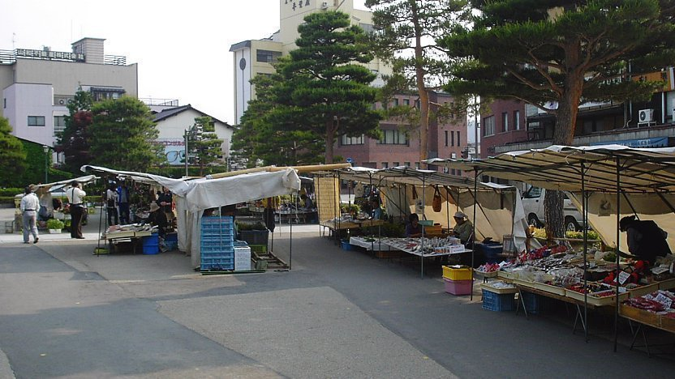
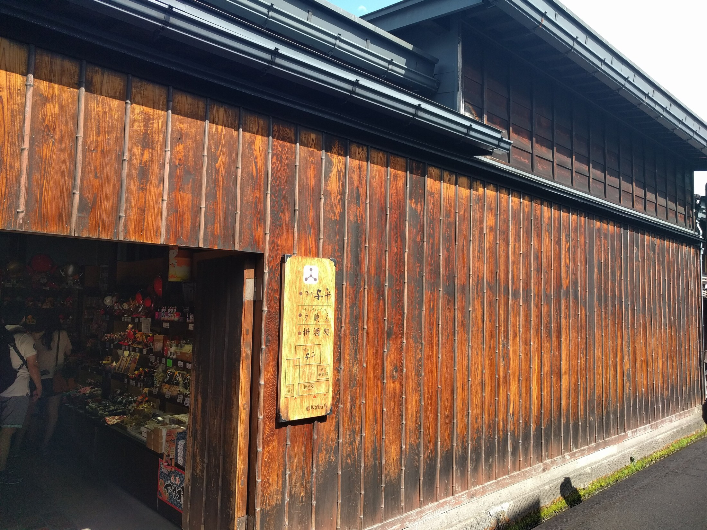

抵达高山的时候，已经是下午。
从妻笼宿出发，我辗转南木曾、中津川和下吕，坐完那趟几乎只有司机与我两个人的乡村巴士，又在最后六分钟里拖着行李跑了两百米，终于被另一辆巴士送进高山。
一整天都在时刻表里穿行，真正落地以后，最先注意到的却是这里的道路。
高山的路很窄。老城的房屋、院墙和店铺紧贴道路排列，许多街巷似乎仍保留着旧时的尺度，只是后来勉强容纳了汽车。拖着行李去住处的路上，我遇到一支施工队。施工区域占去了将近半幅路面，真正干活的人没有看见几个，站在道路两边负责引导的工作人员却少说也有三四位。
他们穿着醒目的橙色制服，远远看见汽车或行人过来，便立即挥动指挥棒，示意应该从哪一侧通过。等人走近，又接连鞠躬，嘴里不停说着抱歉、请慢行、注意安全之类的话。
我只是拖着箱子经过一小段施工路面，却接受了一整套郑重的道歉。
这在日本旅行时经常让人感到有趣。一项工程真正投入多少劳动力，外人未必看得清楚；但为了不让施工打扰别人，他们愿意投入大量人力去解释、引导和道歉。施工本身还没有结束，礼貌已经提前把它包围起来。
有时候甚至让人怀疑，他们修的不只是一段路，也在修补施工给公共秩序造成的那一点不安。
办完入住，天色已经渐渐暗了。
我一个人在高山的街巷里闲逛。那天似乎还飘着一点小雨，深秋山城的寒意顺着衣领慢慢钻进来。街上几乎没有行人，除了几家便利店还亮着灯，大部分商铺都已经关门。木门紧闭，招牌沉默，雨水在昏暗的路面上反着微弱的光。
白天属于游客的街道，入夜以后迅速退回了当地人的生活。
走在这样的街上，很容易产生一种凄冷的感觉。仿佛整座小城已经睡去，只剩一个外地人在雨里寻找晚饭。
我先走进了一家中餐馆。
吸引我的是门口那块写着“天津炒饭”的招牌。出来旅行几天，确实有些想念中国菜；另一方面，我也很好奇，日本小城里的“天津炒饭”究竟会是什么味道。
餐馆不大，店里只有一小排座椅。座位后面的墙上贴满了照片，拍的都是曾经来这里吃饭的客人。许多人对着镜头微笑，一张挨着一张，像是这家小店用自己的方式保存下来的一本食客名册。
我点了一份炒饭和炸鸡。
炒饭的味道后来已经记不清了，炸鸡却是真的好吃。外皮酥脆，里面还保留着汁水。它未必有什么复杂的烹饪技巧，却足以让一个在深秋山城里走了半天的人，迅速恢复对夜晚的信心。
结账时，老板娘拿着一台拍立得过来，问我是否愿意拍张照片。
我欣然答应。
相机吐出相纸的时候，我忽然有些期待：以后若是再来高山，再走进这间小店，或许可以在那面越来越拥挤的墙上寻找自己。照片里的我不会知道后来发生了什么，但它会一直留在这里，和无数来过又离开的陌生人挤在一起。
旅行者总希望从一个地方带走些什么。那家店却反过来，从每个旅行者身上留下了一张照片。
吃过第一顿饭，我继续在雨后的街上溜达。
街道依然空荡，偶尔驶过一辆汽车，很快又恢复安静。我走进住处附近的一家居酒屋，推开门时，却被里面的景象吓了一跳。
好家伙，座无虚席。
客人围坐在桌边，酒杯碰撞，炉火和食物的热气混在一起，交谈声几乎塞满整个房间。我站在门口甚至有些疑惑：这些人究竟是从哪里冒出来的？明明外面的街道上一个人都没有。
这种反差让我想起几年前去新西兰基督城的经历。那天下午五点多，街道上也是空空荡荡，仿佛整座城市已经提前下班。可当我走进一家西餐馆，里面同样人满为患。
后来我才明白，有些城市的热闹并不属于街道。
在中国，热闹往往会从店铺里溢出来。人们站在门口聊天，桌椅摆到路边，灯光、油烟和声音共同占领夜晚。可在一些寒冷而安静的城市，生活更愿意关起门来发生。街道把寂静留给陌生人，屋子则把温度留给熟悉的人。
我在居酒屋里又吃了第二顿。
具体点了什么，大多已经忘了，只记得其中有一道铁板鸡块。当时我想补充一点维生素，看菜单图片里铺着满满一盘包心菜，便点了下来。
菜端上来以后，我觉得味道有些淡，便叫来服务员，问能不能给我一点芥末。
服务员没有立即回答，而是认真地说要去询问一下。过了一会儿，他回来告诉我：没有芥末。
我也没有多想。
可没多久，旁边一桌客人点的寿司送了上来，盘子里明明就放着一小团芥末。
我看着那团芥末，一时不知道该说什么。
大概在他们的系统里，寿司配有芥末，铁板鸡块没有；寿司盘里的芥末属于那道菜，而不是一份可以单独提供给其他客人的调料。服务员所说的“没有”，未必是店里不存在，而是这道菜的供应规则里没有。
这又是一次非常日本式的经历。
日本商业服务常常让人感到细致，但这种细致背后，也有一套极其明确的分类。属于这个格子的东西，很难被临时挪到另一个格子里。它能够保证大多数时候不出错，却也会让一个只想要一点芥末的客人，看着隔壁桌的寿司陷入沉思。
第二天一早，我去了宫川朝市。

走到河边，我才发现这座小城原来有这么多人。昨晚那些从街道上消失的人，似乎一夜之间又全部出现了。
宫川朝市并不长，沿河大约只有三四百米。一边是固定商铺，另一边是临时搭起的摊位。若只论规模，它远不能和国内许多早市相比；但真正有意思的，恰恰是那些看起来不太精致的小摊。
摊位上摆着大萝卜、红柿子、自家腌制的泡菜，还有一些手工制作的小物件。它们没有统一包装，也不像从某个批发市场整齐运来的旅游商品。摊主多半就是附近的农户，卖的是自家土地上长出来、自家厨房里腌出来，或者在漫长冬季到来前亲手做出来的东西。
那种生活气息并不需要刻意营造。
一根萝卜上还带着泥土，一罐泡菜的标签写得并不工整，手工艺品之间也有细微差别。正是这些不整齐，让人知道它们来自具体的人，而不是一条遥远的生产线。
相比之下，对面的固定商铺反而差了一点意思。门面更整齐，商品更适合游客，却少了些土地和手掌留下的痕迹。
旅行中的市场，一旦只剩下“买什么”，便会迅速变成普通的商业空间。真正有趣的市场，总会让人看见商品背后的人如何生活。
离开朝市，我去了高山古街。

白天的高山与夜晚完全不同。木造町屋两旁挤满游客，酒藏、食铺、工艺品店和古董店一家接着一家。我在一间古董店里淘到了一对可爱的人偶。它们不是什么贵重物件，却有一种旧东西才有的温和表情。
后来，一位好朋友乔迁新居，我把这对人偶送给了他。
现在想来，这也是古董最合适的去向。它们从某个不知名的家庭流入高山的店铺，又被我带回中国，最后住进朋友的新家。旧物没有固定的故乡，它只是在人与人之间不断搬家。
走过一条略有坡度的街道时，忽然起了一阵风。
路旁树上的红叶被吹落下来，一片接着一片，在空中打着旋。行人依旧向前走，店铺依旧在做生意，可那一小段街道忽然像被谁轻轻按慢了。
我站在那里看了一会儿。
旅行中有些美景需要买票，需要早起，需要提前寻找机位；还有一些美景什么也不需要。它只是恰好有一阵风，而你恰好从那里经过。
沿着街道继续向小城边缘走，前方出现了一段上山的石阶。
我没有特别的目的，索性拾级而上。
山路上铺满落下的枫叶。鞋底踩上去，发出细碎的沙沙声。树叶有的仍旧鲜红，有的已经变成深褐色，层层叠叠地覆盖着台阶。秋天的魅力，大概就在这种衰败并不让人悲伤。树木正在失去颜色，山路却因此变得更加丰盛。
登高以后再从另一侧下山，眼前的景象又发生了变化。
道路一边是低矮的民居，另一边是零散的农田。田地之间分布着许多坟冢，离最近的住宅，大概只有五十米。生者的屋檐和逝者的墓地彼此可见，中间没有高墙，也没有刻意拉开的距离。
这样的布局，我以前在贵州侗寨也见到过。
城市总是努力把死亡推到视线之外。墓园修在郊外，医院使用洁白的墙壁，人们尽量不在日常谈话中提起衰老和离去。可是生活在大山里的人，似乎没有那么多土地可以用来回避这些事，也没有那么强烈的愿望，要把生与死分隔成两个世界。
他们依山建屋，在土地上耕作，也把先人安放在同一片山坡。
春天播种，秋天收获；有人在屋里吃饭，有人在不远处长眠。山并不区分谁正在生活，谁已经离去。它只是用树木、落叶、雨水和泥土，把所有人留在同一种时间里。
那天下山时，脚下仍不断响起落叶的声音。
我忽然觉得，高山真正让我记住的，并不是某一条古街，也不是宫川朝市上具体买过什么。
我记住的是空无一人的夜路与座无虚席的居酒屋，是墙上等待我下次寻找的拍立得，是寿司盘里那团无法借给铁板鸡块的芥末，是农户摊位上带着泥土的萝卜，是风里旋转的红叶，也是民居旁边那些安静的坟冢。
这座山城把许多看似矛盾的东西放在一起。
街道是冷的，屋里是热的；规则是僵硬的，人情却柔软；古董已经离开旧主人，又将进入一个新家；树叶正在凋落，却让山路拥有了一年中最美的颜色；生者推开窗户，就能看见逝者长眠的地方。
山里的人依山而生，也依山而眠。
而一个旅行者，只是在深秋的某一天从这里经过，听见落叶在脚下沙沙作响。